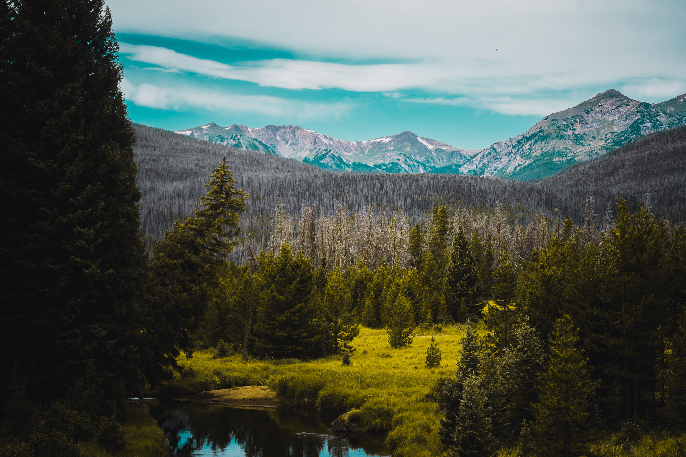

Nature is a British weekly scientific journal founded and based in London, England. As a multidisciplinary publication, Nature features peer-reviewed research from a variety of academic disciplines, mainly in science and technology.

Services
We offer the full spectrum of services to help organizations work better. Everything from creating standards of excellence to training your people to work in more effective ways, assessing how you’re doing, and helping you perform even better in future. Very few others do this, and none have been doing it as long as we have.
Gallery
Here is our working images
Blog
From the first rays of the sun to the moonlight of the moon, from the open fields, from the gardens to the forests and mountains, from the melodious music of the river to the waves rising in the sea, the chirping of a bird sitting on a tree, whatever are the natural resources available around us. We should experience it all and enjoy it. Because until we do not realize its importance and until we do not learn to appreciate its beauty, it cannot be a matter of importance for us. The feelings of a painter, poet, writer and artist are awakened only when he imagines it in the lap of nature in a calm environment, only then he puts it on paper. Without it there is no color in life. When a person gets bored while living a mechanical life, he wants to go in the lap of nature and take a breath of peace. In today’s era, man is getting more attracted towards natural things and even while buying things, he gives importance to natural things or things made from natural elements. When we give so much importance to natural products, why not to nature? After all these things are available only as long as it is nature. We want a lot from nature but at our cost. Planting of plants is not happening at the rate at which we are making products by cutting down trees and reducing forests. We need clean water to drink, but we throw all the poisonous water from the factories in the rivers only. We need chemical free fruits and flowers and food to eat but do not stop using chemicals. If this remains so, then merely making efforts by showing off will not have any effect on nature. The way we treat nature, the same way it will treat us. We should be prepared for all these consequences of unseasonal rains, floods, droughts, weather changes, landslides, drying up forests, barren land. If this continues, then day by day this nature will gradually disappear, so we should try that we can take advantage of it without disturbing the balance of nature. Otherwise it is useless to hope for a clean and healthy life without keeping it clean and healthy.
Testimonials
Please check this
click hereOur Team Members
Click Here